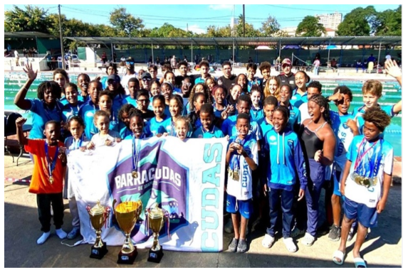

Cleyton Munguambe e Matthew Lawrence dignificam Moçambique nos Jogos da Commonwealth Glasgow 2026
Glasgow, Escócia — Os nadadores internacionais moçambicanos Cleyton Munguambe e Matthew Lawrence representaram com enorme dignidade e espírito de missão a bandeira da República de Moçambique nos Jogos da Commonwealth de 2026.
A competir contra a elite mundial da modalidade, os nossos atletas demonstraram em solo escocês a evolução técnica e a resiliência que caraterizam o nadador moçambicano.
A participação nesta prestigiada competição multicultural enquadra-se na estratégia da FMN de expor os talentos nacionais aos palcos internacionais mais exigentes. Mais do que os tempos registados no cronómetro, a federação enaltece a postura exemplar, a disciplina e o foco demonstrados por toda a delegação técnica em Glasgow.
Estes jogos serviram como uma valiosa plataforma de intercâmbio e de ganho de experiência competitiva, crucial para os próximos ciclos olímpicos e africanos que se avizinham.